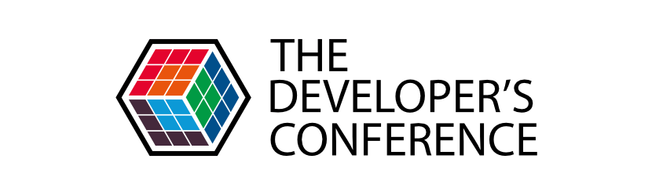

TDC 2015, Trilha Agile
Agenda
- Quem?
- O Que É/Foi a TDC?
- Palestras:
- AGCO + BDD
- Feedback wall
- Débito Técnico vs MVP
- Código feito não é resultado
- Agile: Escalar ou disseminar?
- Agile Coaching Game
- Cerimônias Sem Cerimônias
- Controlefobia = Anarquia
- Agile Coaching
Avisos Importantes!
Não sou especialista em agile.
Não conheco 100% do que foi apresentado.
Não fui eu quem apresentou.
Experiência pessoal das apresentações.
Quem?

Júlio Biason
Na CWI desde 09/2012.
UCS, Datacom.
O que É/Foi a TDC?
- Aconteceu em Porto Alegre nos dias 24 a 26 de Outubro na Uniritter.
- Acontece em São Paulo, Florianópolis e Porto Alegre.
- 23 trilhas (tópicos) diferentes.
- Participei de 2 trilhas (2 dias): Agile UX/Design.
Apresentações
“Desenvolvendo produtos e projetos de forma enxuta e eficiente” - Paulo Caroli
- Esqueci de fazer notas.
- Descreve processo de inception de uma semana.
- Organização dos ciclos.
- Organização dos MVP.
“A experiência da AGCO ao adotar o BDD em seus projetos: uma experiência excitante com o Cucumber como um framework para a especificação e execução de testes” - Rodrigo de Morais / Diogo Lucas
- Os testes foram evoluindo até serem E2E.
- BDD se tornou natural.
- “Definition of Ready”.
- Formato do Cucumber/Gherkin super fácil de ler.
“Feedback wall: acelerando melhoria continua no nivel organizacional” - Cristiano Silveira Basso
- Kanban na parede para coisas fora do projeto (melhorar café, etc).
- Outros andares (equipes) começaram a pedir.
- Pessoas do andar começaram a se envolver para resolver os problemas.
“Gerenciamento da Dívida Técnica em projetos de software utilizando Scrum: uma pesquisa-ação” - Frederico Oliveira
- Como justificar débito técnico quando não é um MVP?
- Quando algo passa a ser um débito técnico?
- Quatro tipos de débitos técnicos: documentação, bug, testes, projeto.
- Quando tratar o débito técnico:
- Pontuar o peso/esforço da tarefa.
- Definir um “juro” do débito técnico.
- Quando o acumulado do juro ultrapassa o esforço, é hora de tratar o débito técnico.
“Código feito não é resultado.” - Robson de Almeida
- Experiência do SuperPlayer.
- Preocupação do que é MMP (minimal marketable product).
- Produto fica pronto para o mercado em 2 anos.
- 96 ciclos/semanas.
- OKR - Objective and Key Results, Intel.
- Objective: subjetivo/qualitativo (“Fazer a tela ficar mais bonita”)
- Key: concreto (“Contratar equipe de UI, aplicar novo estilo”)
- Usado por Google, LinkedIn, Twitter e Zynga.
“Escalar ou disseminar Agile?” - Sérgio Giraldo
- Aplicação de Agile em grandes corporações
- Inicia em uma pequena equipe. Como faz para disseminar?
- Frameworks ágeis em grande escala:
- SAFe: Scaled Agile Framework
- DAD: Disciplined Agile Development
- LeSS: Large Scale Scrum
- Nexus
“Agile Coaching Game” - Guilherme Silva de Lacerda / Dionatan Moura
- Dinamica para coletar perguntas da platéia.)ra coletar perguntas da platéia.
- Pontos interessantes das perguntas:
- Equipes não aceitam métodos ágeis por não entender. “Não se vê valor no que não se conhece”
- Se há rejeição, não usar nomes de metodologias ágeis (“Então, o que vocês veem de problemas?”)
- Código sem teste é código legado, mesmo escrito um mês atrás.
- “O cliente não sabe o que quer”, mas o cliente tem obrigação de saber?
“Como deixar o planning, a daily, a review e a retrospectiva mais objetivas” - Joyce Bastos / Cristina Otto
- “Retornar ao básico”
- Planning:
- PO diz o que, dev diz como.
- Scrum master faz a ponte.
- Pré-game
- Daily:
- “O que eu fiz ontem, o que eu vou fazer hoje, quais os impedimentos”
- Fica chato depois de um tempo.
- “Walk to the wall”
- Review:
- Apresentação pro cliente.
- Não ter medo de mostrar os problemas.
- Mostrar os objetos do sprint.
- Retrospectiva
- O que tem acontecido que podemos melhorar
- Melhoria contínua
- Métricas
- Votar nos piores problemas, devem ser atacados.
“Controlefobia = Anarquia!” - Juliano Ribeiro
- Precisamos de controles.
- Fobias surgem de traumas.
- “No broken window”: se já tem um problema, o pessoal não dá bola (se tem um teste não passando, não passar 2 não é problema).
- Kanban tem slots; número de slots é menor que o número de pessoas
- Se não tem slot, alguém vai ter que fazer pair
- Empresa quer 70% de pair programming
- Revisão global tem número de slots; se alguém quer que seu código seja revisado, tem que revisar dos outros
- “Escadas” no burnout indicam erro de granularidade.
“Você sabe qual a função de um Agile Coach?” - Annelise Gripp
- O que faz um agile coach
- Agile = processo = mentoring
- Coaching = pessoa = coaching
- Procurar qualidades nas pessoas para achar o melhor lugar delas dentro do projeto.
Mais informações:
http://www.thedevelopersconference.com.br/tdc/2015/portoalegre/trilha-agile